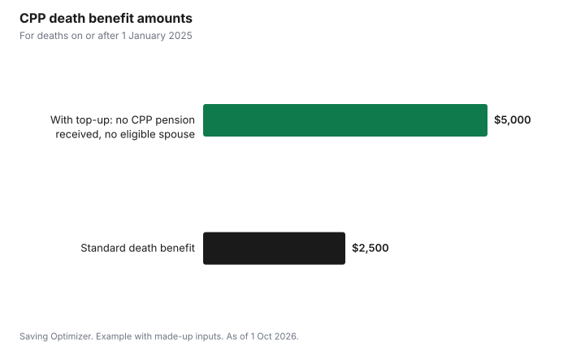

Events · Canada
Funeral Costs in Canada and the CPP Death Benefit: What to Know and Who Applies
In Canada, the main ways to keep funeral costs manageable are to ask for each provider's price list before you sign, choose only the services you want, and apply for the Canada Pension Plan (CPP) death benefit, a one-time payment of $2,500 or, in some cases since 2025, $5,000, as of 1 October 2026. The extra $2,500 top-up applies when the person who died qualified for the death benefit but had never received a CPP or QPP retirement pension or disability benefit and has no surviving spouse or common-law partner eligible for a survivor's pension. Funeral prices vary widely, from a direct cremation with no service to a full traditional funeral with burial, so getting itemized prices from more than one provider can save thousands of dollars. In Ontario, you can cancel a funeral contract within 30 days of signing for a full refund.
Key takeaways
- CPP death benefit: $2,500 one-time payment, plus a possible $2,500 top-up (total $5,000) for deaths on or after 1 Jan 2025 when the contributor never received a CPP or QPP pension or disability benefit and no spouse or partner is eligible for a survivor's pension.
- The executor should apply within 60 days. If there is no estate or the executor has not applied, it may be paid to whoever paid for the funeral, then the surviving spouse or partner, then next of kin.
- Ontario providers must give you a price list before a contract; you have 30 days to cancel for a full refund, and later cancellation fees are capped at 10% or $350.
- Direct cremation is usually the lowest-cost option; services, caskets, plots and receptions add the most.
- Funeral costs are usually paid from the estate, and are not deductible on the final tax return.
- Example with made-up inputs: three funeral budgets compared, with the death benefit applied.
What makes up the cost of a funeral
A funeral bill is a list of separate items, and you can usually choose which ones you want. Funeral homes charge for professional services and the use of their facilities; cemeteries charge for interment rights, opening and closing a grave and markers; crematoriums charge for cremation. Third-party costs such as death notices, flowers, clergy honorariums and a reception are often added to the funeral home's bill as disbursements.
| Item | What it covers | Optional? |
|---|---|---|
| Professional services | Arranging, paperwork, permits, staff | Usually required by the provider |
| Transfer of the deceased | Bringing the person into the funeral home's care | Required |
| Embalming and preparation | Needed for some viewings | Often optional |
| Casket or container | From a basic container to a premium casket | Choice of type |
| Visitation and service | Use of facilities and staff | Optional |
| Cremation fee | Paid to the crematorium | Only for cremation |
| Interment rights, opening and closing | Grave, niche or scattering rights at a cemetery | Only for burial or interment |
| Marker or monument | Headstone or plaque | Optional; can be later |
| Death certificates, notices, flowers, reception | Third-party costs | Mostly optional |
Your rights when buying funeral services in Ontario
In Ontario, the Funeral, Burial and Cremation Services Act sets out consumer rights, and the Bereavement Authority of Ontario (BAO) licenses providers and handles complaints. Providers must give you a price list of all supplies and services before a contract is made. They must disclose commissions or benefits they receive for recommending other businesses, such as a florist. After signing a contract for funeral, cemetery, cremation or alkaline hydrolysis supplies or services, you have 30 days to change your mind and receive a full refund, except for supplies and services already delivered. After 30 days, a cancellation fee may apply, but it cannot be more than 10% of the contract or $350. Prepaid contracts signed since 1 July 2012 are guaranteed, meaning the provider must supply everything listed without extra charges even if prices rise.
Other provinces have their own rules and regulators. Wherever you are, ask for itemized prices in writing, make sure the contract lists taxes, and get a signed copy.
The CPP death benefit
The CPP death benefit is a one-time payment made on behalf of a person who contributed enough to the Canada Pension Plan. The basic amount is $2,500. For deaths on or after 1 January 2025, a top-up of $2,500, for a maximum of $5,000, may be paid when the deceased qualifies for the death benefit, never received a CPP or QPP disability benefit, post-retirement disability benefit or retirement pension, and has no surviving spouse or common-law partner eligible for a survivor's pension, according to the Government of Canada's CPP death benefit page as of 1 Oct 2026. The change was made to support families of contributors who died before collecting any CPP benefits.
| Situation | Amount |
|---|---|
| Contributor made enough CPP contributions | $2,500 |
| Death on or after 1 Jan 2025, contributor never received a CPP or QPP retirement pension or disability benefit, and no spouse or partner eligible for a survivor's pension | $5,000 ($2,500 plus $2,500 top-up) |
| Contributor did not make enough contributions | No death benefit |

Who can apply
The executor of the estate should apply within 60 days of the date of death. If there is no estate, or the executor has not applied, the benefit may be paid, in order, to the person or institution that paid for or is responsible for the funeral, the surviving spouse or common-law partner, or the next of kin. Service Canada says payment takes about 6 to 12 weeks after it receives the application. Applications are made to Service Canada online or with the paper form. Have the deceased's social insurance number, the death certificate or funeral director's statement of death, and proof of payment of funeral costs if you are the person who paid.
The death benefit is reported as income. The CRA's line 11400 page says it is not reported on the deceased person's final return; a beneficiary who received it reports it on line 13000, unless a T3 trust return is filed for the estate. The CPP survivor's pension and children's benefit are separate monthly benefits that must be applied for separately. Veterans' families may also qualify for funeral help through the Last Post Fund.
Who pays and what the estate covers
Reasonable funeral costs are generally paid from the estate before beneficiaries receive anything. If a family member pays upfront, they can usually be reimbursed by the estate; keep the receipts. If the estate cannot cover the costs, some provinces and municipalities offer funeral assistance for people with low income; ask the funeral home or local social services. Funeral costs are not deductible on the deceased's final tax return.
In Ontario, an estate that needs a certificate of appointment (probate) pays estate administration tax of $15 for every $1,000 of estate value over $50,000, with no tax on the first $50,000. Other provinces have different probate fees. Life insurance with a named beneficiary is paid directly to the beneficiary and does not go through the estate, which can be faster for covering funeral costs. See how much life insurance you need.
Example with made-up inputs: three funeral budgets
These numbers are an example with made-up inputs. They are not real funeral prices in any province. A family compares three options and applies a $2,500 CPP death benefit.
| Item | Direct cremation | Cremation with memorial | Traditional burial |
|---|---|---|---|
| Funeral home services and transfer | $1,800 | $3,000 | $4,500 |
| Casket or container | $200 | $300 | $3,000 |
| Cremation or cemetery costs | $700 | $700 | $6,000 |
| Service, reception and notices | $0 | $1,500 | $2,500 |
| Total before benefit | $2,700 | $5,500 | $16,000 |
| After $2,500 CPP death benefit | $200 | $3,000 | $13,500 |
In this example, the choice of service and burial drives the cost far more than any single item. The family could also hold a memorial at a community hall or a home later, which lowers costs without giving up a gathering.
A plan for the first days
- Call a licensed funeral home or transfer service; ask for the price list before choosing anything.
- Check whether the person left instructions or a prepaid contract.
- Choose only the services you want; compare at least two providers if time allows.
- Order enough death certificates for banks, insurers and government.
- Keep every receipt and the signed contract.
- Apply for the CPP death benefit and any survivor's benefits through Service Canada.
- Tell the CRA and Service Canada about the death; the executor handles the final return.
| Item | Provider A | Provider B |
|---|---|---|
| Services and transfer | ||
| Casket or container | ||
| Cremation or cemetery | ||
| Service, reception and notices | ||
| Total | ||
| Less CPP death benefit |
Pre-planning
Some people pre-plan and prepay their own arrangements. In Ontario, prepaid money is held in trust or insurance and contracts are guaranteed. Pre-planning without prepaying, by writing down wishes and telling your executor, also spares family difficult decisions. If you prepay, keep a copy of the contract with your will.
Common mistakes
- Signing a package before seeing the itemized price list.
- Missing the 30-day full-refund window in Ontario if you change your mind.
- Forgetting to apply for the CPP death benefit, or assuming it is only $2,500.
- Losing receipts needed for reimbursement from the estate.
- Not telling Service Canada and the CRA, which can lead to overpayments that the estate must repay.
Sources
- Government of Canada, CPP death benefit: amount, eligibility, who can apply and processing time (canada.ca), as of 1 Oct 2026.
- Canada Revenue Agency, Line 11400 - CPP or QPP benefits (canada.ca), as of 1 Oct 2026. Death benefit (T4A(P) box 18) reporting.
- Government of Ontario, Funeral, burial, cremation, alkaline hydrolysis or scattering: your rights (ontario.ca), as of 1 Oct 2026.
- Bereavement Authority of Ontario, consumer information and A Guide to Death Care in Ontario (thebao.ca), as of 1 Oct 2026.
- Government of Ontario, estate administration tax (ontario.ca), as of 1 Oct 2026.
- All amounts in the three-budget example are made-up inputs and not real funeral prices.
Frequently asked questions
How much is the CPP death benefit?
$2,500, as a one-time payment. For deaths on or after 1 Jan 2025, a $2,500 top-up, for a maximum of $5,000, may be paid when the contributor never received a CPP or QPP retirement pension or disability benefit and has no surviving spouse or common-law partner eligible for a survivor's pension, as of 1 Oct 2026.
Who can apply for the CPP death benefit?
The executor of the estate should apply within 60 days of the death. If there is no estate or the executor has not applied, it may be paid to the person or institution that paid for the funeral, then the surviving spouse or common-law partner, then the next of kin.
Can I cancel a funeral contract in Ontario?
Yes. You have 30 days after signing to cancel for a full refund, except for supplies and services already delivered. After 30 days, a cancellation fee may apply, capped at 10% of the contract or $350.
Is the CPP death benefit taxable?
It is reported as income. The CRA says it is not reported on the deceased person's return; a beneficiary who received it reports it on line 13000, unless a T3 trust return is filed for the estate.
Researched and drafted with AI assistance and fact-checked against official Canadian sources. How we create content.
Disclosure: Saving Optimizer may earn a commission if a partner link is added later, such as a life insurance offer type. No partnership with any funeral home, cemetery or insurer is claimed on this page, and no provider is ranked. Education only; this is not legal advice.